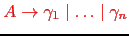

Sig: Esquemas de Traducción Sup: Analizadores Descendentes Predictivos en Ant: Análisis Sintáctico Predictivo Recursivo Con:
En particular, es recursiva por la izquierda si contiene una regla de producción de la forma . En este caso se dice que la recursión por la izquierda es directa.
Cuando la gramática es recursiva por la izquierda,
el método
de análisis recursivo descendente predictivo no funciona.
En ese caso, el procedimiento
A asociado con ciclaría para siempre sin llegar a consumir ningún
terminal.